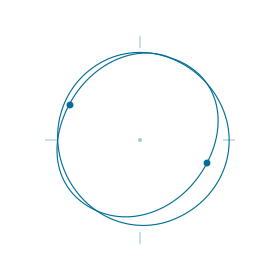

01.
Learning
学ぶ、共有する
起業・経営・ビジネスをテーマに、勉強会や輪読会などを通じて知識を深めます。一方的に教わるだけでなく、互いに考えを共有し、理解を深められる学びの場を目指します。
東京理科大学の学生を中心としたサークル
起業・経営・ビジネスをテーマに、輪読会や意見交換で学びを深めます。学生や社会人との交流から生まれたアイデアを、小さな企画や実践につなげることを目指しています。
活動を見る
ビジネスや経営に関心があっても、何から始めればよいか迷うことがあります。先に取り組んでいる人の試行錯誤を聞き、自分なら何ができるか考える。そんな会話が生まれ、得た経験を次の人へ渡せる場を目指しています。
Learn More起業・経営・ビジネスをテーマに、勉強会や輪読会などを通じて知識を深めます。一方的に教わるだけでなく、互いに考えを共有し、理解を深められる学びの場を目指します。
これから挑戦したい学生、すでに活動している人、経験を共有したい人が交流する機会をつくります。異なる視点に触れ、仲間や新しい活動のきっかけを見つけることを大切にします。
交流や学びから生まれたアイデアを、企画や実践につなげる機会を目指します。ピッチづくりや共同企画など、一人では難しかったことにも仲間と取り組める場を育てていきます。
現在、掲載はありません。
お知らせや活動記録を、順次掲載していきます。
参加・交流・連携について
受付準備中